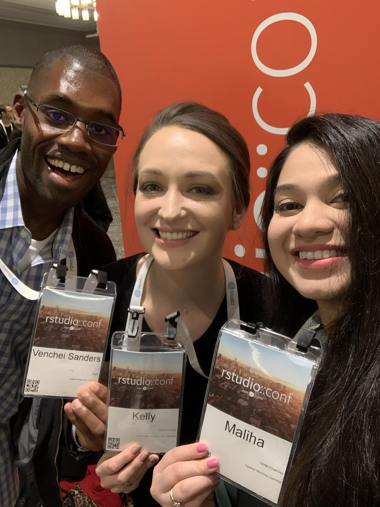

Reflections on RStudio::Conf 2019 & 2020
Leveraging conferencing for personal and professional development
 Photo by Christina Salmo
Photo by Christina Salmo
About my first conference experience
A year ago, My Shiptmate, Nathan and I went to our first Data Science conference, RStudio::Conf 2019 in Austin,
Figure 1: RStudio::Conf 2019 Welcome Presentation
It was there that I realized the existence of a large and welcoming community of lovers of not only R, RStudio, et al but also of people. For the first two days of the conference I attended the Deep Learning workshop and Nathan the Tidyverse workshop. I was exposed to deep learning models such as Neural Networks, Long Short Term Memory (LSTM), etc.
We also stayed to attend the conference. It was there that I was exposed to passionate R developers, talks, and seminars. I heard David Robinson give a presentation called The unreasonable effectiveness of public work. I also heard a really cool presentation on computer science education called Explicit Direct Instruction in Programming Education.
During one of the sessions, I attended Brooke Watson’s presentation for the ACLU titled R at the ACLU: Joining tables to to reunite families
One neat feature of a conference is the entertainment. The entertainment at RStudio::Conf 2019 was Willie Nelson’s son, Luke Nelson. He along with a few other bands gave performances at the famous Austin City Limits. Here’s a clip from his performance.
Here are some pictures that I took during the conference; among others these include, the gghighlight digital poster, Earo Wang’s presentation on TSibble and Tidy Time Series Analysis (all part of the Tidy Verts).

Figure 2: GGHighlight E-Poster

Figure 3: Earo Wang Presentation
Figure 4: Boston Accent: Git Outta Here 😂
Figure 5: Hadley: YOU, you get a car! 🤣…

This brought us to the end of our visit to Austin, Texas and the conclusion of the 2019 RStudio::Conf with the announcement of the 2020 RStudio::Conf in San Francisco, CA.
The biggest takeaway from this conference for me may have been David Robinson’s presentation on public works and sharing your findings for community and personal growth.
That talk inspired me to create this site and hopefully (🤞) inspire minorities to journey into the field of Data Science. I was definitely pumped to learn more about machine learning and to attend the 2020 conference is San Francisco.
About my second conference experience
During the month of June 2019, I relocated to my current company’s west coast office in San Francisco, CA. This gave me the chance to attend the 2020 RStudio::Conf without the cost of housing for the week.
When you attend a conference you get some solid swag. Here are a few pics.
Figure 6: Front of tshirt

Figure 7: Rear of tshirt
Figure 8: Should have wrote @davencheicodes… 2021!?
Figure 9: Cheat Sheet
Figure 10: Reticulate Cheatsheet
Figure 11: Wish I had a clone…
This year, I attended the Applied Machine Learning workshop taught by Max Kuhn. His workshop was fairly intense. It focused on topics including Regression, Decision Trees, and Clustering methods, all in two days. We implemented those methods using the tidymodels framework. I loved it and would highly recommend!
On day two, Hadley Wickham and Max Kuhn signed their books Advanced R and Feature Engineering and Selection.
Figure 12: Got my personal copy signed!
Figure 13: Thanks Max!
The final two days are the conference. Here are some pics of the keynote and presentations that I saw.

Figure 14: Countdown to the 2020 RStudio::Conf!…
Figure 15: A keynote video
Figure 16: Y’all we made it!
Figure 17: Value
Figure 18: Hadley Wickham presentation
Figure 19: Hexagon Wall
Figure 20: Up close
Figure 21: Excel Joke
Figure 22: Use R in Production!
Figure 23: Preach Brotha. Come on Stakeholders. Ask better questions.
Figure 24: Lessons
Figure 25: Rob Hyndman #TimeSeries

Figure 26: Not So Standard Deviations Ep. 100

Figure 27: Hilary Parker and Roger Peng

Figure 28: RStudio::Conf 2021 is in Orlando, FL!
Closing thoughts and remarks

This year, my biggest takeaways include not only the lessons learned during the workshop but also the cool friendships built with others across the United States. I currently use the Tidy Models framework that Max Kuhn taught us. Moreover, I now understand MARS models. A model type that is used by my current employer - I’ll touch more on this in a later post.
During the workshop, I sat beside Maliha and later in the conference I met her boss lady, Kelly. Moreover, I made some great connections with other Data Scientist; some at Blue Cross Blue Shield, others at FAANG (Facebook, Amazon, Apple, Netflix, Google). I was also able to ask Yihui Xie a RMarkdown question!
It’s been really great to take the lessons learned at this conference and leverage them in my everyday work. I would say that conference has a high return on time and money spent; RStudio::Conf is one such conference. I would highly recommend attending at least one. I personally believe in my favorite economists Raj Chetty his work at Opportunity Insights, specifically insights and thoughts around Lost Einstiens.
Thanks for checking out my first post. Stream of consciousness: I’m hoping to write at least once a month. I have completed the framework for my next two posts (one about developing this site, hosting, and the markdown image struggle ðŸ˜) and another about data analytics for a company machine learning project; however, current employer has dibs first for their Medium Blog.
I’m looking forward to sharing more as journey into the space.
See ya in Orlando in 2021 and ROLL TIDE! 👋
-V